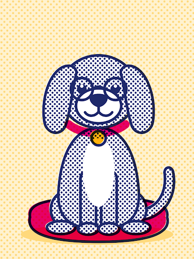

7

ROCKY
Rocky
214 días esperandoPerro abuelito · 8 años · Talla mediana
«Abuelito y bonachón, pide cama y un rincón.»
Sin solicitudes activas
Promover carta
share
Bienvenido al panel de gestión del Refugio San Roque Tulancingo · Martes, 20 de octubre de 2026
Histórico anual acumulado · 28 adopciones celebradas
3 familias encontraron a su compañero ideal este mes en Tulancingo. Quedan 7 días para alcanzar la meta mensual de 5 adopciones.

Perro abuelito · 8 años · Talla mediana
«Abuelito y bonachón, pide cama y un rincón.»

Perra adulta · 5 años · Talla grande
«Grande, fiel y protectora, cuida la casa a toda hora.»

Perrita joven · 2 años · Esterilizada
«Sale de noche y de día, pasea en tu compañía.»